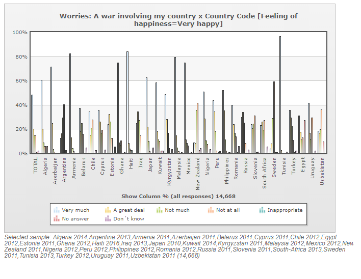
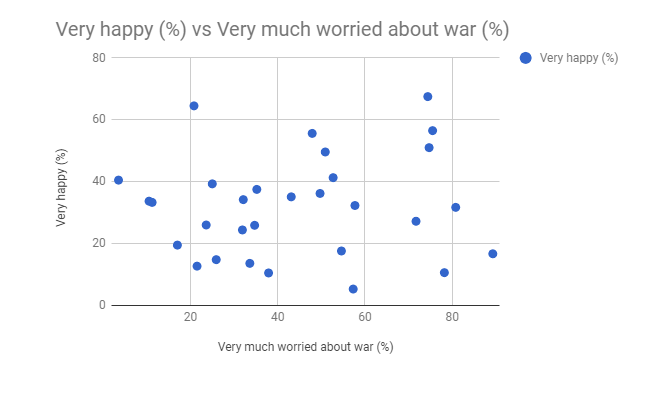
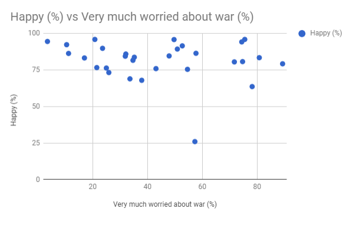

Analytical trail WVS:
Is there a correlation between worrying about war and how happy people are?

It is very difficult to draw any meaningful information from the visualization but there appears to be some level of correlation between the two.

Through the use of a simple scatterplot it is much easier to tell that there appears to be somewhat of a correlation between the two factors, but the correlation is not highly significant.
However when not only very happy is factored in and the people who responded that they are rather happy are included too the scatterplot changes dramatically and there appears to be a very low degree of a correlation between the factors. The correlation is significantly less visible when people who are "rather happy" are factored in, indicating that people may still be happy when they are worried about war, but are less likely to be "very happy" when compared to countries where the population does not fear a war involving the country.

Analytical trail D3 visualization:
Is there a correlation between GDP per capita and the proportion of people who answer that they are either very happy or rather happy?
From the visualization it is immediately visible that in the countries with higher GDP per capita tend to have higher proportions of happy people while the countries with lower GDP per capita have a lot more variation in the proportions of people who are happy.
What causes the variation in happiness among countries with lower GDP per capita?
Surprisingly there does not appear to be a correlation between happiness and trust, however increased happiness seems to correlate to some degree with longer life expectancies.
Another noteworthy find is that higher military spending seems to correlate with shorter life expectancy in many countries, but not in countries with extremely low GDP per capita.
Learnings:
I attempted to add a draggable scale to the visualization in order to account for the time axis where all the countries would move around depending on where on the time scale you were, however my lack of experience with D3 as well as my lack of time caused me to settle for making the visualization in this more static format.
Despite my failure to implement a time scale in my visualization I learned a lot through this project. I had not previously worked with D3 or any similar visualization tools and my experience with web-programming is also very limited. I learned how to handle CSV files, the basics of D3, and got a whole lot of new insight into working with javascript and HTML.